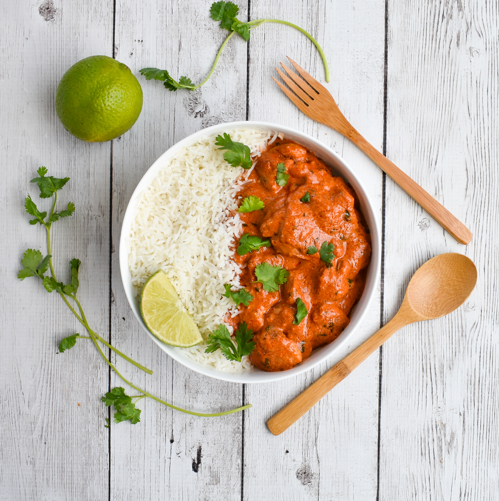

Low FODMAP Chicken Tikka Masala

Description
Here is a wonderful low-FODMAP Chicken Tikka Masala recipe. Its a family favorite that you will make again and again. While simple to prepare, this low-FODMAP recipe results in tender and flavorful chicken morsels that will remind you of your favorite Indian restaurant (but without the onion and garlic!).
Ingredients
Chicken Tikka:
- 2 pounds boneless, skinless chicken thighs
- 1/4 cup greek yogurt
- 1 tbsp garlic infused olive oil
- 2 tbsp canola oil
- 2 tsp fresh lime or lemon juice
Masala sauce
- 1 tbsp ground coriander
- 1 1/2 tsp ground cumin
- 1/2 tsp ground cardamom
- 1/2 tsp ground nutmeg
- 1 1/2 tsp paprika
- 1/2 tsp ground cayenne pepper
- 1 tbsp fresh ginger
- 4 tbsp unsalted butter
- 1 1/2 cup canned tomato puree
- 3/4 cup water
- 1/2 cup canned coconut cream (cream of coconut will not work)
- 1 1/4 tsp salt
- 1/2 tsp black pepper
- 1/2 cup chopped cilantro or spinach
Steps:
Chicken Tikka prep:
- Chop the chicken thighs into bite sized pieces
- In a medium bowl, whisk together the yogurt, 1 tablespoon garlic infused oil, lime (or lemon) juice
- Add the chicken, and rub the marinade over the meat
- Set the chicken aside while you make the sauce
Masala Sauce:
- In a small bowl, whisk together the coriander, cumin, cardamom, nutmeg, paprika, cayenne, and grated ginger
- In a heavy, wide 4-quart pot or sauté pan over moderately high heat, melt the butter
- Reduce the heat to low then stir in the spice and ginger mixture
- Add the tomato purée, water, coconut cream, and salt, and bring the sauce to a boil
- Reduce the heat to gently simmer the sauce, uncovered, until thickened slightly, about 10 minutes
While the sauce is simmering, cook the chicken:
- Heat a heavy 11- to 12-inch griddle or skillet over moderately high heat until very hot and add 1 tablespoon of canola oil
- Working in batches, cook the chicken pieces, turning them a few times and lowering the heat if the chicken chars too quickly, until just cooked through and browned well on both sides
- Transfer the chicken as cooked to a cutting board
- When all the chicken is cooked, add the chicken to the simmering sauce and continue to gently simmer it, stirring occasionally, for 5 minutes
- Remove the pan from the heat, stir in the black pepper and chopped cilantro, and season with salt
- ransfer the chicken to a serving dish and garnish with additional cilantro sprigs
- Serve with low fodmap rice or low fodmap foccacia